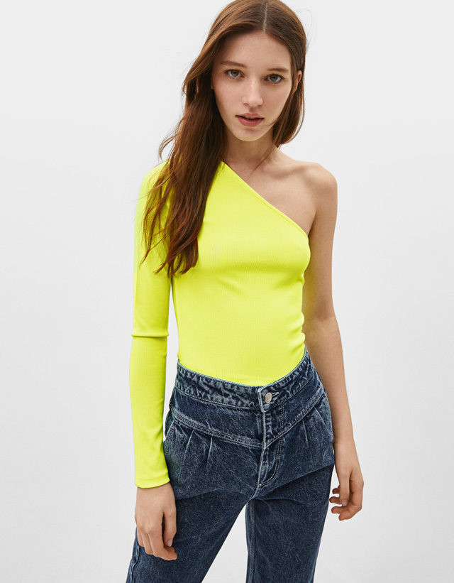
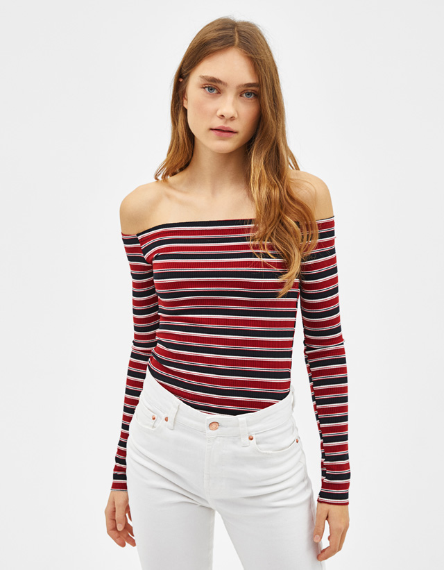
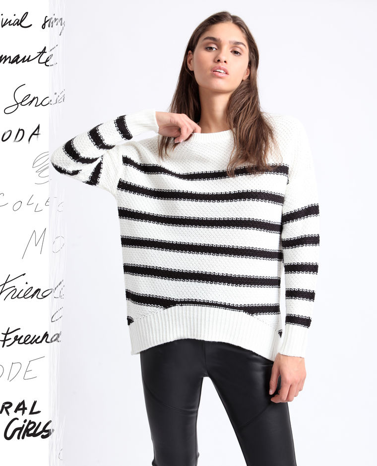

<!--
  Generated template for the PagJerseyPage page.

  See http://ionicframework.com/docs/components/#navigation for more info on
  Ionic pages and navigation.
-->
<ion-header>
    
    <button  block ion-button [menuToggle]="activeMenu" icon-only>
        <ion-icon name="menu"></ion-icon>
        <ion-title>Jerseis</ion-title>
    </button>
  </ion-header>


  <ion-content class="card-listachaq">
  <ion-card>
    
    <div class="card-titulo" (click)="abrir1()">Jersey Asimetrico</div>
    <div class="card-subtitulo">12,99€</div>
  </ion-card> 
  <ion-card>
    
    <div class="card-titulo" (click)="abrir2()">Jersey Bardot</div>
    <div class="card-subtitulo">12,99€</div>
  </ion-card> 
  <ion-card>
      
      <div class="card-titulo">Jersey Estampado</div>
      <div class="card-subtitulo">6,99€</div>
    </ion-card>
    <ion-card>
        
        <div class="card-titulo">Jersey de Rayas</div>
        <div class="card-subtitulo">19,99€</div>
      </ion-card>
      <ion-fab bottom>
          <button ion-fab (click)="atras()">
            <ion-icon name="arrow-back" ></ion-icon>
          </button>
      </ion-fab>
  
  
</ion-content>